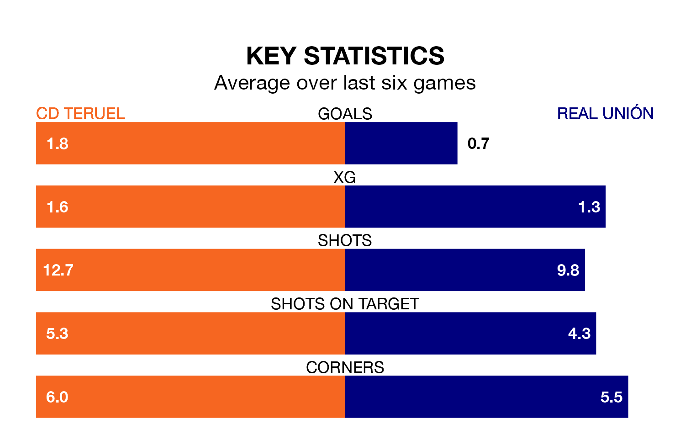

Real Unión travel to the Estadio La Pinila looking to secure a first win in nine Primera Division RFEF Group 1 games against CD Teruel on late Saturday.
Unión have lost three and drawn five matches since they last earned three points – against SD Tarazona on January 27.
They face a Teruel side who have won three and drawn three over that time.
With 23 goals in 29 games so far this season, Teruel are scoring at below the league average rate with 0.8 goals per game. And they are conceding at an average rate, letting in 30 goals at a rate of 1.0 per game.
Unión, meanwhile, are above average scorers, with 1.2 goals per game, compared to a league average of 1.0. They have conceded 1.3 goals per game.
In Alberto Solís Gómez, the visitors have one of the league's sharpest shooters so far this season. He has notched eight goals in 24 appearances, to sit second in the scoring charts.
The home side's top scorers, with two goals each, are Daniel Villanueva Rivas and Borja Martínez Giner.
Teruel are 17th in the table after 29 games, of which they have won four and drawn 16, earning 28 points.
Unión are three places ahead of Teruel in 14th, with eight wins and nine draws putting them on 33 points.
Teruel's last match was on March 23, a 2-2 draw against Real Sociedad B, with Ignacio Castillo Ameyugo and Martínez Giner getting the goals for Teruel.
Unión drew 1-1 with SD Logroñés last time out, also on March 23, with Solís Gómez on the scoresheet.
Updated: 12:16 (UTC), 25/03/24